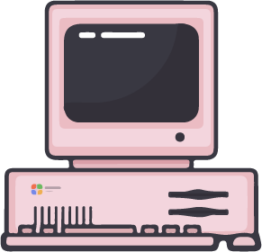
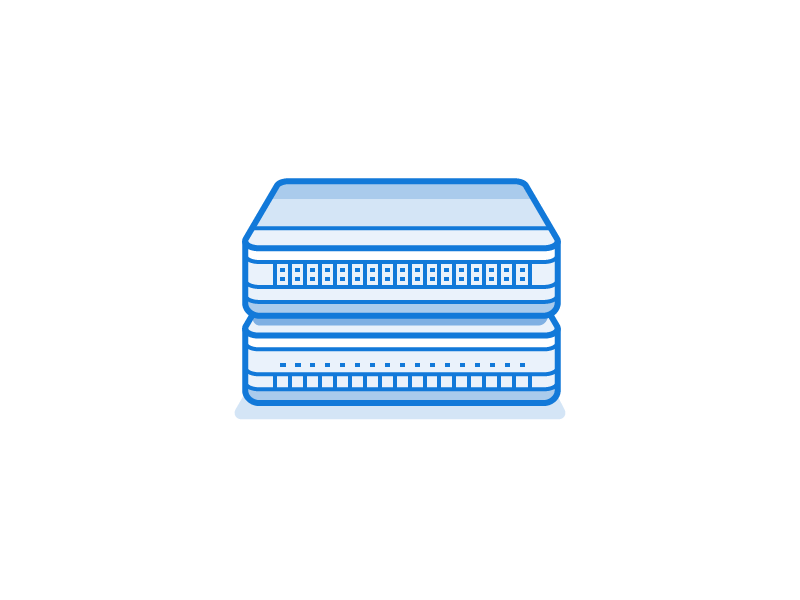

<ion-header>
    <ion-navbar>
        <ion-title>
            Equipments
        </ion-title>
    </ion-navbar>
</ion-header>

<ion-content class="card-background-page">

    <ion-card class="animated shake delay-2s" (click)="openPcConfig('0')" text-center style="background-color: yellow;">
        
        <div class="card-title">PC0</div>
    </ion-card>

    <ion-card class="animated shake delay-3s" (click)="openPcConfig('1')" style="background-color: greenyellow;">
        
        <div class="card-title">PC1</div>
    </ion-card>
    <ion-card class="animated shake delay-4s" (click)="openPcSwitch()">
        
        <div class="card-title-switch">Switch</div>
    </ion-card>

</ion-content>